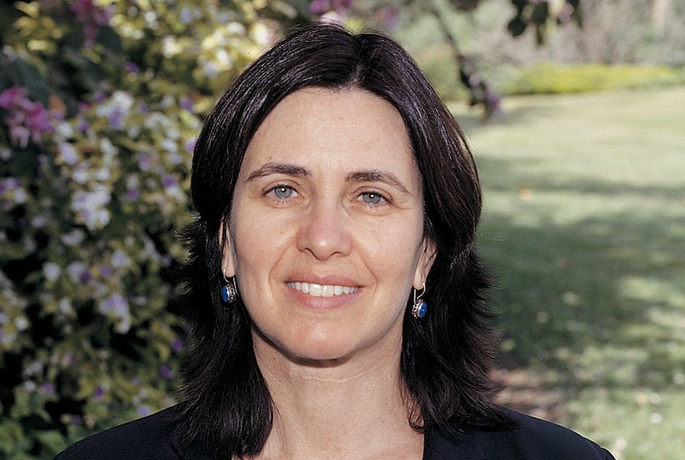

Shafi Goldwasser is in 1958 geboren in New York.
Haar ouders zijn Israëlisch, dus ze is half Israëlisch en half Amerikaans.
Na haar geboorte verhuisde Shafi en haar ouders terug naar Israël, zodat ze daar naar de basisschool kon in Tel Aviv.
Op de middelbare school was ze vooral geïnteresseerd in natuurkunde, wiskunde en literatuur.

Na haar schooltijd verhuisde ze terug naar Amerika.
Ze studeerde wiskunde op de Carnegie Mellon University (CMU) in Pittsburgh en in 1979 behaalde ze daar haar bachelor.
Ze raakte erg geïnteresseerd in computerwetenschappen en programmeren.
Vooral de algoritmes en discrete wiskunde vond ze erg interessant.
Ze heeft even gewerkt aan het CM-project van de CMU over een 50-processor multiprocessor systeem.
Ook had ze een zomerstage bij RAND Cooperation in Los Angeles.
Ze deed daarna een master informatica aan de universiteit van Berkeley in California, waar ze het erg leuk vond om te wonen.
Bij deze studie werkte ze samen met Michael Powell en David Patterson aan de optimale instructieset van de RISC-architectuur.
Maar ze ontmoette al snel een groep jonge, enthousiaste theoretische onderzoekers, waaronder Silvio Micali, en begon zich meer te interesseren in de theoretische kant van de informatica.
Ze begon een promotie bij Manuel Blum, een hoogleraar informatica die zich vooral interesseerde in de complexiteitstheorie en al een Turing Award gewonnen had.
Toen ze klaar was met haar promotie in 1984 ging ze bij de MIT werken, in 1997 werd ze RSA Professor of Electrical Engineering and Computer Science.
Ook is ze verbonden aan het Weizmann Instituut der Wetenschappen in Israël, daar is ze sinds 1992 hoogleraar voor computerwetenschappen en toegepaste wiskunde.
Ze is getrouwd met Nir Shavit, ook een informaticus, hij is hoogleraar aan de universiteit van Tel Aviv en de MIT.
Samen hebben ze twee zonen en reizen ze op en neer tussen Israël en Amerika. Ze verhuizen elke drie jaar naar het andere land.